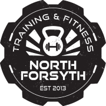

A supportive atmosphere focused on community and healthy living.
North Forsyth Training & Fitness started with a passion for helping people in our community from all ages reach their full potential by promoting functional fitness and a healthy lifestyle to imporve your overall life.

Interested in joining? Have questions?
Fill out this form.
Hear from our members...
My name is Sally Lee and I joined North Forsyth Training & Fitness in late January 2020, so I have
been going to NFTF for a little over a year now. I would say for most of my life I have been pretty
active and exercise has played an important part of my life. However, after I had kids, I used all the
excuses (I’m too busy, I’m too tired, I have no time to exercise) and I put myself and my fitness
journey on the back burner. The last several years, I kept telling myself that I need to get it
together! Then a friend of mine, Lindsay Studer, told me all about NFTF and how much she loves it. To be
honest, I never thought HITT would be the right fit more me, but after finally being sick and tired of
where I was physically, I decided to give it a shot. Although I was unsure and nervous, what did I have
to lose? Turns out I had everything to gain.
This past year at NFTF has been a great experience. Starting out with the one on one’s with Jesse was
key. That really set the foundation for a successful entry into classes because there is a lot to learn.
There is so much I love about NFTF. One thing I love is that every work out is different. It really
helps make it not boring and keeps your body guessing. On a weekly bases, I am sore in places I never
thought I could get sore, which means it is working! I also love having Jesse and coach Julie there to
guide me along the way and push me when I need pushed (which is a lot). Even when Jesse gives me a hard
time and pushes me outside my comfort zone, I know it is because he cares and really does want us to see
results. Having that one on one attention on a regular bases has been a game changer, which is one thing
you won’t get working out on your own or even with most gyms. I also love having the accountability and
consistency which helps keep me on track. The music and energy is awesome especially when he plays old
school rap which is my favorite! Most of all I love the people! There are so many wonderful people that
go to NFTF that I would have never had the opportunity to meet had I not joined.
If you are looking for a challenge, then I would say NFTF is the place to you. This gym gives you the
opportunity to be challenged in so many ways. This past January I participated in the nutrition
challenge. It was really hard but also very rewarding. To be able to say you are strong enough to get
though the challenge is empowering. And the results were awesome! I lost 15 pounds and 15.5 inches
during the challenge. The nutrition coupled with the workouts really do amazing things for your body but
also your mind and spirit. It is definitely not always easy but I will say it is always worth it! I
would encourage anyone who has been thinking about doing something to improve their health to just take
the leap of faith and join! And if you join, I would also encourage you to then commit! Results don’t
happen by going every now and then. If you want to see results, then you must be consistent and go
regularly! Trust me there are some days I don’t want to go, but then I go and I feel so much better
afterward. I am very thankful for NFTF and I hope you can say the same thing, too!
On June 21st 2016 my daughter Avery convinced me to go to “the gym” with her. At the time, I was pushing
308 pounds and had associated health issues. Being an athlete all my life and in this condition was
really depressing. To be honest, I was a little nervous when I walked into the gym. I felt like the new
kid entering the classroom mid- way through the school year. That feeling quickly disappeared as soon as
I met Jesse and Lauren Foster. They made me feel comfortable and welcome. I signed a few wavier forms,
let them know that I could come three days a week then started stretching. I noticed some in the gym
were lifting bar bells and other heavy weights but Jesse let me know very quickly that I would not be
touching any weights for some time. On June 21st, 2016, Jesse started me on what I call “a path to
recovery”. For the first two months, the coaches monitored my performance and modified my workouts. My
workouts consisted of pushups, air squats, sit ups, alternating toe touches, kettle bell swings,
running, rowing, and pull up rings. The workouts are timed and the goal is to do as many reps as
possible. I never felt awkward even though I am older than most, out of shape, weak at most exercises
and outperformed by most, including pregnant women. The owners and trainers at NFTF really care about
each member and their personal growth. In addition to working out, Lauren taught me key aspects of
eating healthy. Basically, she said I could eat anything I wanted except things that came in a box, bag,
bread, white rice, white noodles, and to cut out sweets for now. I am proud to say that I haven’t missed
a single workout and along with my new eating habits I have lost 48 pounds. My road to recovery has not
been easy mainly because my mind says I can but my body says not so fast. Jesse says it best, as long as
you are moving you are making progress. I want to thank NFTF for getting me back on track and encourage
others to join and start their own road to recovery.
I started 2019 in a sad place in my life. I have a beautiful wife, awesome kids, wonderful family and
friends, and a great job. Despite this, I was depressed and unhappy with myself. I was at an all-time
high with my weight at 323lbs. I had just been given an epidural to deal with nagging back pain. I got
out of breath and my knees hurt just from walking up a single flight of stairs. My blood pressure was
averaging about 140/90. I was prediabetic with insulin at 97. My LDL cholesterol was 100, which is the
recommended high and my liver functions were elevated due to years of obesity. At 41 years old, it was
not what I wanted for myself, and I knew I had to make a change. I have done diets enough to know they
work until you stop. Your eating habits have to change for life to keep the weight off. I've had a lot
of experience with strength training in the past and liked lifting weights. There just never seemed to
be enough time, and in my mind, I could always justify something else being more important.
I have a friend, Josh Angel, who is in phenomenal shape. He was a skinny guy when we met 9 years ago,
but was obviously an athlete. He previously raced road bikes professionally, played semi-pro hockey, and
played college sports. I have watched him transform over the years into a person with a great balance of
muscle mass and lean conditioning after HITT became his go-to exercise routine about 6 years ago. In the
fall of 2018, he told me, “Harley, I am in the best shape of my life. I have been more muscular. I have
been in better cardiovascular shape, but I have never had such a balance of both.” That statement really
made me respect high intensity training as a fitness regiment. It obviously wasn’t an option for me
though, was it? I wasn’t in good enough shape to even start training. Besides, those people are like a
cult and do some crazy stuff as a part of their workout. Through the fall and over the 2018 holiday
season I continued to eat, drink, and stay, not merry, but miserable. Finally on January 2, 2019, I had
enough. I decide I was going to start a new lifestyle that day and change my eating habits and start
working out. I knew how to eat well, so that part was just a matter of making the change. I have a great
gym in my basement, but I knew I wouldn’t stick to a weightlifting routine alone. I also knew I needed
to do some cardio, and I freaking HATED cardio. If you saw me running, you had better run too, because
it meant something was chasing me!
What would work and meet my needs? High intensity training sounded like a good balance of some things I
loved and some things I needed, but hated. I researched 'starting HITT when you were in terrible shape'.
I found success stories online and saw that it could be done. Josh recommended North Forsyth Training
and Fitness. He said they paid a lot of attention to proper form and fundamentals which would help
reduce risk of injury. I reached out to NFTF that same day and made an appointment to meet with Jesse
Foster on Friday, 01/04/19. Jesse assured me I could start, and he could help me transition into the
classes safely. I joked about it being a cult and he said, “When something has a huge impact on your
life in a positive way, you want to tell people about it. That is why it has the stigma.” I asked Jesse
if we could start Monday. 01/07/19 began my journey. One year later, I am happy to say this is the
fittest I've been in over 20 years. My annual physical was in December of 2019. My resting heart rate
has dropped from 84 to 64. Blood pressure is averaging about 120/75. Insulin level is 6, and LDL is 75.
Liver functions are normal again. I have no back issues and my knees feel much better. Today, I am
248lbs, and my waist has dropped from a size 46 to a size 38. The 75 pounds I've lost and the muscle
I've gained is an amazing start, but I know the real payoff comes from staying the course long-term. I
plan to continue to work to achieve my fitness goals. Jesse Foster and NFTF have helped me change my
life in an amazing way. Jesse is an amazing coach and now someone I consider a friend. The people at
NFTF are truly my gym family as they have cheered, encouraged, and inspired me along the way. Thank you
all. I am very blessed to go through this journey with such amazing people.